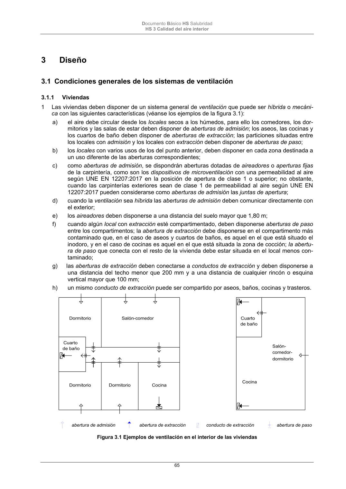

DB-HS · Página 65 · versión 2022-06-14
SHA256: 68df3caacc95f71aee2ec1ba7b2c65ae66155c21e3a8785521b8fdd4fd640d3b · página física 65 de 184 · métodos de encabezado
solo si están cotejados.
Formatos: Markdown · JSON de bloques · PDF p. 65 · imagen PNG
Documento Básico HS Salubridad HS 3 Calidad del aire interior 65 3 Diseño 3.1 Condiciones generales de los sistemas de ventilación 3.1.1 Viviendas 1 Las viviendas deben disponer de un sistema general de ventilación que puede ser híbrida o mecáni- ca con las siguientes características (véanse los ejemplos de la figura 3.1): a) el aire debe circular desde los locales secos a los húmedos, para ello los comedores, los dor- mitorios y las salas de estar deben disponer de aberturas de admisión; los aseos, las cocinas y los cuartos de baño deben disponer de aberturas de extracción; las particiones situadas entre los locales con admisión y los locales con extracción deben disponer de aberturas de paso; b) los locales con varios usos de los del punto anterior, deben disponer en cada zona destinada a un uso diferente de las aberturas correspondientes; c) como aberturas de admisión, se dispondrán aberturas dotadas de aireadores o aperturas fijas de la carpintería, como son los dispositivos de microventilación con una permeabilidad al aire según UNE EN 12207:2017 en la posición de apertura de clase 1 o superior; no obstante, cuando las carpinterías exteriores sean de clase 1 de permeabilidad al aire según UNE EN 12207:2017 pueden considerarse como aberturas de admisión las juntas de apertura; d) cuando la ventilación sea híbrida las aberturas de admisión deben comunicar directamente con el exterior; e) los aireadores deben disponerse a una distancia del suelo mayor que 1,80 m; f) cuando algún local con extracción esté compartimentado, deben disponerse aberturas de paso entre los compartimentos; la abertura de extracción debe disponerse en el compartimento más contaminado que, en el caso de aseos y cuartos de baños, es aquel en el que está situado el inodoro, y en el caso de cocinas es aquel en el que está situada la zona de cocción; la abertu- ra de paso que conecta con el resto de la vivienda debe estar situada en el local menos con- taminado; g) las aberturas de extracción deben conectarse a conductos de extracción y deben disponerse a una distancia del techo menor que 200 mm y a una distancia de cualquier rincón o esquina vertical mayor que 100 mm; h) un mismo conducto de extracción puede ser compartido por aseos, baños, cocinas y trasteros. abertura de admisión abertura de extracción conducto de extracción abertura de paso Figura 3.1 Ejemplos de ventilación en el interior de las viviendas
